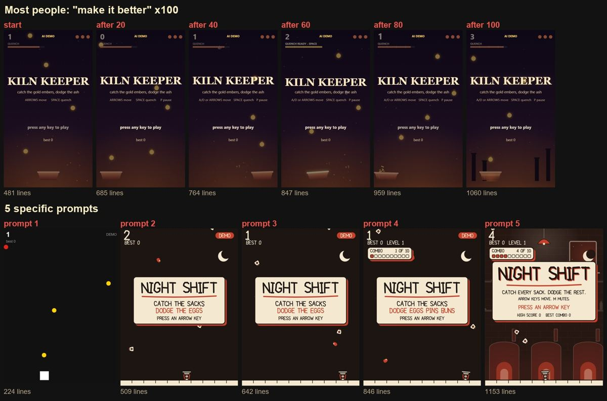

Night Shift: built with 5 prompts
The same Claude model that changed nothing after 100 rounds of "make it better". Tap the game to play: hold left or right to move.
How I prompt Claude to make anything better
"Make it better" doesn't tell Claude what better means, so it guesses. In my test it added 579 lines, and the only change you could see was four chimneys. These five rules are what changed everything:
- Say what "better" means. The look, the feel, or the depth. Pick one.
- One direction per prompt. Style first, then feel, then depth, then the world around it.
- Name concrete things. "Squash and stretch, a 50 ms hit-stop" beats "make it juicier".
- Say what to keep. "Keep the gameplay the same" stops it from breaking what works.
- Say what NOT to add. "No gradients, no glow, no new features" kills the generic AI look.
The template I use, for games, pages, thumbnails or videos:
Make it better. Better means: [the one outcome you want]. Keep: [what already works]. Change only: [one area], with [2-3 concrete details]. Don't add: [what you don't want].
That was one game. This is every video I post.
The rules work because they spell out what "better" means. I wrote that down once for each part of my content, and Claude Code follows it: the morning idea list, the edit, the posting schedule. Even the DM that sent you here went out by itself. Here it is running:
Under a minute, sound on. The presenter is my AI clone.
Skip the 100 rounds.
Inside AI Virality Creators, my Skool community, you get the real files behind it:
- The full Night Shift experiment. All 100 "make it better" versions to open yourself, the note Claude left after every round, and what each of the 5 prompts changed.
- Breakdowns of my reels. Every prompt, every edit choice and what it cost in credits.
- Write Better Prompts, the prompting module for image and video tools.
- A reply on your own work. Post what you want to improve and I'll tell you what I'd make "better" mean for it.
120+ creators are already inside.
The 5 prompts that built this game
1. Start very basic
Make a very basic original browser game in a single file, index.html, with no external assets or libraries: a square you move left and right with the arrow keys to catch falling dots, while avoiding falling red dots. Plain shapes and plain colors only, no art, no sound, no menus. When nobody presses a key for 2 seconds, an attract mode plays the game by itself.
2. One clear style
Give it one clear art direction and keep the gameplay the same. Theme: a night-shift baker catching falling flour sacks and dodging falling eggs. Style: flat paper-cutout shapes with chunky hand-drawn outlines, only three colors (cream, warm red, ink black), a hand-lettered title. The square becomes a little baker with a basket; the dots become sacks and eggs. No gradients, no glow, no generic fonts.
3. How it feels
Make the one mechanic feel great, with no new features: the baker accelerates and leans into turns, the basket squashes and stretches on every catch, each catch gets a 50 ms hit-stop and a small screen shake, a broken egg splats with ink-black paper pieces, and each catch plays a short pop whose pitch rises with every catch in a row (WebAudio).
4. Depth, no new buttons
Add depth without new controls: three falling hazards that behave differently (an egg that falls straight, a rolling pin that zigzags, a burnt bun that splits in two near the ground), difficulty that ramps every 20 seconds, and a combo meter that doubles the score from 10 catches in a row and resets on a miss. Show the combo clearly in the same paper style.
5. A finished world
Make it feel like a finished indie game in the same three-color paper style: a parallax bakery background at night (ovens, shelves, a window with a moon) that warms up as the combo grows, a title screen with the hand-lettered name and a one-line pitch, a game-over screen with score, best combo and time, and a simple background music loop made with WebAudio (four soft chords). Keep the attract mode working.
What 100 rounds of "make it better" did
Top row: the same game after 20, 40, 60, 80 and 100 rounds. It grew from 481 to 1,060 lines (a pause menu, wind, a mute button) and the only change you can see is four chimneys. Bottom row: the 5 prompts above.
